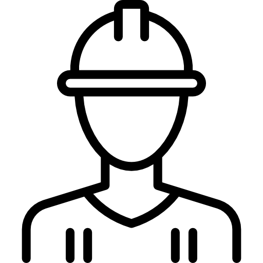
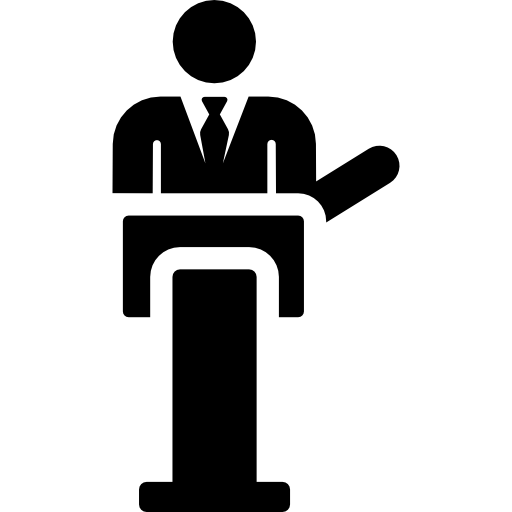

Quatre Crises
Le joueur incarne un personnage dans l’Amérique des années 1920, où la prospérité économique règne en maître. Les choix qu'il fait influenceront son destin personnel, mais aussi celui de l’économie globale.
-
Investisseur Audacieux

-
Politicien Influant
-
Ouvrier Américain

Le marché boursier est en pleine effervescence. Les gains sont rapides et les possibilités infinies. Vous avez investi massivement, mais la question reste : jusqu'où la vague de prospérité ira-t-elle ?
Les signes d’instabilité commencent à apparaître. Les rumeurs de bulle spéculative se multiplient. Que faites-vous ?
Le marché commence à montrer des signes de faiblesse, mais vos actifs sont plus résilients. Que faites-vous ?
Le krach frappe de plein fouet. Votre portefeuille perd presque toute sa valeur en une journée. Vous êtes endetté jusqu’au cou et les banques exigent leur dû. C'est la ruine.
Le marché s'effondre, mais vos pertes sont limitées. Vous avez sauvé ce qui pouvait l'être, mais votre avenir financier reste incertain.
Le krach arrive et vous n’avez pas tout perdu, mais l’économie plonge, et même vos valeurs refuges en pâtissent. Votre sécurité est relative.
Le krach anéantit vos espoirs. Votre portefeuille s'effondre. Vous réalisez trop tard que vous auriez dû rester prudent.
Vous êtes au cœur du gouvernement, témoin d’une croissance économique effrénée. Mais cette prospérité repose sur des bases fragiles : la spéculation et le crédit facile. Allez-vous intervenir pour éviter une catastrophe, ou encourager la croissance, quitte à risquer une crise ?
Les lois passent, mais affaiblies. Les banques continuent de prêter, et les tensions montent. Que faites-vous ?
Les marchés sont surchauffés. Vous commencez à recevoir des avertissements de la part d’économistes inquiets. Que faites-vous ?
Vos mesures atténuent le choc, mais l’économie s'effondre tout de même. Vous sauvez le système bancaire, mais la récession plonge le pays dans le chaos.
Le krach de 1929 vous frappe de plein fouet. Les banques s’effondrent, et la crise économique est inévitable. Votre carrière politique est en ruine.
Vos mesures arrivent trop tard. Le krach dévaste l’économie et votre carrière. Vous vous retrouvez à gérer une crise que vous n’avez pas pu éviter.
Le krach arrive, détruisant non seulement l'économie mais aussi votre réputation. Vous réalisez trop tard l’ampleur de la crise que vous avez laissée se développer.
Vous travaillez dur dans une usine de production automobile. Vous voyez les autres autour de vous profiter de la prospérité grâce au crédit facile. Le rêve américain est à portée de main, mais vous hésitez : devez-vous vous lancer dans la consommation, ou rester prudent ?
Votre salaire reste stagnant, mais les mensualités augmentent. La situation économique commence à se détériorer. Que faites-vous ?
Vous voyez les autres dépenser sans compter. La tentation d’investir dans des actions est grande. Que faites-vous ?
Le krach vous prend par surprise. Vous perdez votre emploi, et vous ne pouvez plus rembourser vos dettes. La banque saisit vos biens. C'est la ruine.
Vous perdez votre emploi, mais vous avez réussi à limiter les dégâts financiers. La crise est dure, mais vous tenez bon.
Le krach détruit vos investissements en un instant. Vous perdez toutes vos économies. L’avenir s’annonce sombre.
Le krach arrive, mais vous avez évité le pire. Vos économies vous permettent de survivre, mais le chômage et la récession rendent la vie très difficile.
Quatre Crises
Le joueur est plongé dans l'euphorie des années 1960 et du début des années 1970, une période de prospérité et de croissance économique. Cependant, cette prospérité repose sur une base fragile : la dépendance excessive au pétrole étranger. Les tensions géopolitiques montent au Moyen-Orient, et le spectre d’une crise énergétique plane sur l’Occident. Le joueur incarnera un personnage clé dans ce contexte et devra faire des choix qui influenceront le déroulement des événements. Saurez-vous naviguer à travers cette période tumultueuse et éviter la catastrophe ?
-
Dirigeant Industriel
-
Politicien Occidental

Vous êtes à la tête d'une grande entreprise automobile. Le monde n’a jamais été aussi avide de voitures, et la demande est en constante augmentation. Mais les rumeurs de tensions au Moyen-Orient inquiètent. Devez-vous continuer à produire au rythme effréné, ou anticiper une éventuelle crise énergétique ?
L'embargo pétrolier est annoncé, et le prix du pétrole quadruple en quelques mois. Votre production devient trop coûteuse. Que faites-vous ?
Les tensions au Moyen-Orient s'intensifient. Le prix du pétrole grimpe en flèche, et les consommateurs cherchent des alternatives moins coûteuses. Que faites-vous ?
La stagflation frappe. Les ventes s'effondrent, et l'entreprise est au bord de la faillite. Vous vous demandez si vous avez fait les bons choix.
Les consommateurs se détournent de vos véhicules coûteux. Les ventes chutent et les bénéfices s'effondrent. La crise est inévitable.
Vos nouveaux modèles rencontrent un franc succès. L'entreprise traverse la crise mieux que prévu, bien que les profits soient encore en berne.
Vous évitez la faillite immédiate, mais votre entreprise perd son avantage concurrentiel. La reprise économique sera difficile.
En tant que ministre de l'Énergie d'un pays occidental, vous devez garantir la sécurité énergétique de votre nation. Les tensions géopolitiques au Moyen-Orient menacent l'approvisionnement en pétrole. Allez-vous anticiper une crise et sécuriser des ressources alternatives, ou compter sur une résolution rapide du conflit ?
L'embargo pétrolier est imposé. Les réserves permettent de limiter l'impact immédiat, mais elles s'épuisent rapidement. Que faites-vous ?
L'embargo se prolonge, et la situation devient critique. Les prix explosent, et les entreprises commencent à licencier. Que faites-vous ?
La stagflation frappe malgré tout. L'économie souffre, mais les tensions sociales sont partiellement contenues. Vous sauvez ce qui peut l’être.
Vous parvenez à sécuriser des livraisons de pétrole, mais à un prix élevé. L'économie subit tout de même un choc, et votre popularité chute.
Les coûts de production explosent, et l'efficacité baisse. La nationalisation limite les dégâts, mais ne résout pas la crise.
Les résultats se font attendre. L'économie entre en récession, mais les fondations pour une transition énergétique sont posées. Vous payez le prix politique maintenant, mais l’histoire vous jugera plus clémentement.
Quatre Crises
Le joueur est plongé dans les années précédant la crise des subprimes de 2008, une période marquée par une frénésie immobilière et un accès au crédit facile. Les institutions financières, les agents immobiliers, et les consommateurs sont tous emportés dans la spirale de l’endettement et de la spéculation. En tant que personnage clé de ce système, le joueur doit naviguer à travers ces eaux troubles, faire des choix qui détermineront son succès ou sa faillite, et tenter d'éviter, ou d'exploiter, la catastrophe imminente.
-
Prêteur Hypothécaire
-
Agent Immobilier
En tant que directeur d’une institution de crédit hypothécaire, vous avez le pouvoir de décider à qui prêter de l’argent. La demande de prêts immobiliers est en forte croissance, et les profits rapides semblent à portée de main. Mais vous savez que beaucoup de ces prêts sont risqués. Allez-vous maximiser les profits immédiats, ou penser à la stabilité à long terme ?
Les ventes de maisons atteignent des sommets, mais les taux de défaut de paiement commencent à augmenter. Les signes de surchauffe du marché se multiplient. Que faites-vous ?
Vos concurrents engrangent des bénéfices records avec les subprimes. Vos actionnaires commencent à se plaindre. Que faites-vous ?
Le marché des subprimes s’effondre. Les titres deviennent toxiques, et vous êtes pris dans une vague de faillites. Votre institution est accusée d’avoir alimenté la crise.
Vous évitez le pire de la crise, mais l'effondrement du marché immobilier affecte tout de même vos activités. Vous survivez, mais à un coût élevé pour vos profits.
Le marché s'effondre, et vos nouveaux prêts deviennent rapidement des actifs toxiques. Votre institution est en difficulté, et vous luttez pour éviter la faillite.
Le krach des subprimes emporte beaucoup de vos concurrents. Vous survivez à la crise avec un minimum de dégâts, et votre réputation est renforcée.
Vous êtes un agent immobilier prospère, profitant de la flambée des prix de l’immobilier. Les maisons se vendent comme des petits pains, et les commissions ne cessent d’augmenter. Mais vous sentez que quelque chose ne va pas. Les prix sont trop élevés, et les clients commencent à avoir du mal à obtenir des crédits. Allez-vous profiter de la bulle tant qu’elle existe, ou vous préparer à son éclatement ?
Les prix continuent de grimper, mais les ventes commencent à ralentir. Certains clients peinent à payer leurs mensualités. Que faites-vous ?
Le marché semble encore solide, et vos avertissements passent pour du pessimisme. Vous perdez des clients au profit d'agents plus optimistes. Que faites-vous ?
Le marché s’effondre. Les propriétés que vous avez vendues perdent de leur valeur, et les clients vous accusent de les avoir trompés. Votre réputation est détruite, et votre entreprise est en faillite.
Le marché s'effondre, mais vos clients sont moins touchés par la crise. Votre entreprise survit, mais à un prix : vos revenus ont chuté de manière significative.
Le marché s'effondre peu après. Vos clients se sentent trahis, et votre réputation est entachée. Vous luttez pour maintenir votre entreprise à flot.
Le marché s’effondre, et beaucoup d’agents immobiliers font faillite. Vous avez moins de clients, mais une réputation intacte. Votre entreprise se maintient malgré la tempête.
Quatre Crises
Le joueur est plongé au cœur de la crise du COVID-19 en 2020, une période de bouleversements sans précédent pour le monde entier. Les hôpitaux sont submergés, les économies vacillent, et les gouvernements doivent prendre des décisions difficiles pour protéger leurs citoyens. En tant qu’acteur clé de cette situation, le joueur devra naviguer à travers les défis médicaux, économiques et sociaux, tout en tentant de minimiser les pertes humaines et économiques.
-
Propriétaire d'Hôpital

-
Citoyen Ordinaire
Vous êtes le propriétaire d'un hôpital privé au début de la pandémie de COVID-19. Les cas commencent à augmenter rapidement, et les ressources deviennent de plus en plus limitées. Vous devez gérer les lits, le personnel, les équipements de protection, tout en veillant à la sécurité et au bien-être de vos employés. Allez-vous privilégier le profit, ou le bien-être des patients et du personnel ?
Les patients affluent malgré les prix élevés, mais le personnel est épuisé et de plus en plus de voix dénoncent vos pratiques. Que faites-vous ?
Le personnel est satisfait, mais l'hôpital n'est pas rentable, et les ressources commencent à manquer. Que faites-vous ?
Les médias et le public s’insurgent contre vous. Les manifestations et les critiques fusent. La réputation de votre hôpital est détruite, et vous faites face à des enquêtes gouvernementales.
Les critiques se calment, et l'hôpital est reconnu pour ses efforts pendant la crise. Vous obtenez des subventions gouvernementales pour soutenir vos activités.
Les aides arrivent, mais insuffisamment. L'hôpital survit, mais vous devez faire des choix difficiles quant aux patients à traiter en priorité.
L'hôpital devient un exemple de gestion éthique pendant la crise. Votre décision renforce la cohésion de l’équipe et améliore la réputation de l’hôpital, mais les difficultés financières persistent.
Vous êtes un citoyen ordinaire vivant la pandémie de COVID-19. Le gouvernement a mis en place des mesures de confinement strictes pour limiter la propagation du virus. Vous devez décider si vous allez respecter ces règles ou non. Mais ce choix ne concerne pas seulement votre propre sécurité, il affecte aussi celle de toute la communauté. Vos décisions seront influencées par ce que vous pensez que les autres vont faire, et par les conséquences potentielles de chaque action.